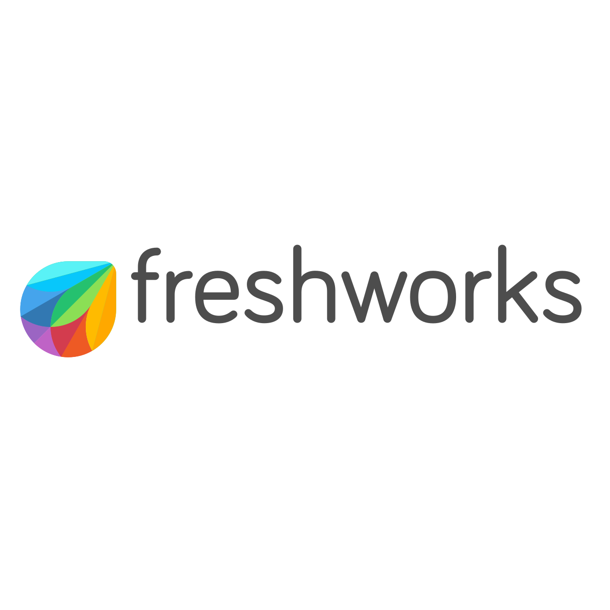
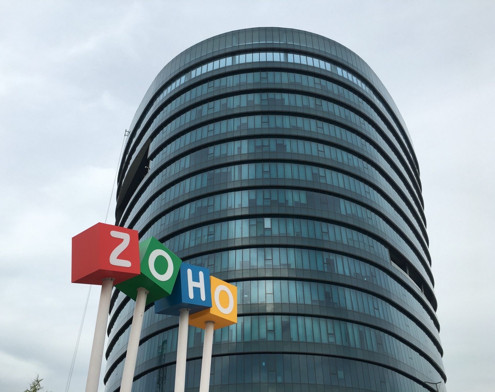

-
Zoho
-
Freshworks


Freshworks is a leading software company founded in 2010 and headquartered in Chennai, Tamil Nadu. It develops cloud-based business software that helps companies manage customer support, sales, marketing, and IT services. Freshworks serves businesses of all sizes in many countries around the world. The company is known for its easy-to-use products, innovative solutions, and excellent customer service, making it one of India's successful technology companies.
Freshworks office website -
TCS (Tata Consultancy Services)


Tata Consultancy Services (TCS) is one of the largest IT services and consulting companies in the world. Founded in 1968, it is part of the Tata Group and has offices across India, including Chennai. TCS provides services such as software development, cloud computing, artificial intelligence, cybersecurity, and business consulting. The company serves clients in many countries and is known for its innovation, high-quality services, and strong global presence.
TCS (Tata Consultancy Services) office website -
Infosys


Infosys is a leading Indian information technology company founded in 1981 and headquartered in Bengaluru, Karnataka. It has a major presence in Chennai and other cities across India. Infosys provides services such as software development, IT consulting, cloud computing, artificial intelligence, cybersecurity, and digital transformation. The company serves clients in more than 50 countries and is known for its innovation, quality services, and strong commitment to technology and customer satisfaction.
Infosys office website
 |
Zoho is a leading Indian software company founded in 1996 and headquartered in Chennai, Tamil Nadu. It develops cloud-based software for businesses, including applications for customer relationship management (CRM), accounting, email, project management, and office productivity. Zoho serves millions of users worldwide and is known for its innovative products, affordable solutions, and focus on customer privacy. It is one of India's most successful technology companies and continues to expand its global presence.
Zoho office website